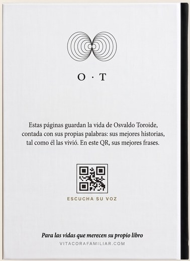

Solo tiene que mandar un audio.
Le escribimos por WhatsApp a la hora a la que suele contestar, y contesta hablando, apretando el micrófono como cuando le manda un audio a sus hijos. Si un día no puede, la pregunta le espera.
Las preguntas van de la infancia a lo que aprendió en la vida, etapa por etapa. Las primeras son fáciles; las últimas, las que nadie se anima a hacer en la mesa.
Te dejamos la portada, el índice de su libro y la primera página escrita. Y un minuto de su voz.
Leer el anticipo de ejemplo →No esperas al final: lo lees mientras se escribe.
A la tercera respuesta te llega un correo con un minuto de su voz y las primeras páginas ya escritas: la portada con su nombre, el índice de su libro y su primera página, con sus palabras y su manera de decir las cosas.
Y desde tu panel lo ves crecer, mucho antes de que esté terminado. No hay que esperar a ciegas.

Una vida merece un libro.
Una vida corriente tratada como una vida extraordinaria, porque lo es. Capítulos, índice y sus frases de siempre en una página aparte.
Escrito con sus palabras. Se lee en la web, capítulo a capítulo, con sus fotos y sus mejores frases en su voz real.
49 €Tapa dura, con su foto en la portada y un código QR para escuchar su voz.
99 €Un marco con su foto y un chip: acercas el móvil y suena su voz. Se pueden pedir con el libro digital o con el impreso.
+ 20 €De él vas a tener fotos. Con esto, lo que decía.
El libro viene con sus mejores frases en su voz real: sus dichos, su manera de empezar las frases, la risa cuando se acuerda de algo. Se escuchan en la web, se reenvían por WhatsApp, y el libro impreso lleva un código QR que la hace sonar.
«…mi padre plantó la parra el año que nací. En verano comíamos debajo, y todavía me acuerdo del olor a uva caliente y de mi madre gritando que nos laváramos las manos.»

Su libro en la estantería.
Su foto, a la vista.
Un marco negro pequeño, de 13 × 18 cm, con la foto suya que elijas. Para poner encima de un mueble, junto a su libro, o para regalar a los hermanos.


Este año, regala algo que no está en ninguna tienda.
Todos los años el mismo problema y todos los años lo mismo. Este año hay algo que antes no existía: la historia de la familia, y un trozo de esa historia para cada uno.
Quien regala hoy busca «regalos con identidad» y con un componente emocional claro. — IFEMA Intergift, Navidad 2025
Para cada primo y cada tío: acercas el móvil y suena su voz.
Le enviamos un mensaje precioso el día que elijas, y tú recibes una tarjeta lista para imprimir y poner bajo el árbol.
Todo lo que aprendió en una vida, guardado para los que vienen.
No es nostalgia: es transmisión. Lo que aprendió en toda una vida les sirve a sus nietos, y a los que todavía no han nacido.
Hay preguntas que un día ya no se pueden hacer.
Detrás de cada libro hay personas.
Somos [nombres]. Empezamos Vitácora porque [vuestro motivo real, en una frase: por ejemplo, la historia de alguien de vuestra familia].
[cómo se hace cada libro, contado con honestidad: quién pregunta, quién escribe y quién lo revisa].
Un solo pago. Sin sorpresas después.
Lo que cuesta hoy un libro de preguntas que él tendría que rellenar a mano. Aquí lo cuenta hablando, y le queda su voz grabada.
Comprar el libro Si él no quiere hacerlo, te devolvemos el dinero.La entrevista completa por WhatsApp, a su ritmo
El anticipo tras su tercera respuesta y el panel para verlo crecer
El libro en PDF con «Su voz», para leer y escuchar siempre
Si él no acepta participar, te devolvemos el dinero completo
Cada noche te pregunta por el día, guarda la foto que le mandas con su historia y, al volver, tu viaje es un libro. Cada ciudad, un capítulo.
Conocer la Vitácora de viaje · desde 49 €Hay quien no lo hace por un padre ni por un abuelo, sino por sus propios hijos: quiere dejar contado de dónde viene. Funciona igual: las preguntas te llegan a ti y el libro es el de tu vida.
Empezar mi propio libroLo que suelen preguntarnos.
¿Mi padre va a saber usarlo?+
No hay nada que instalar ni que aprender. Le llega un mensaje de WhatsApp y contesta con un audio, como hace todos los días.
¿Y si no quiere, o le da vergüenza?+
Le pedimos permiso antes de empezar y él decide. Puede parar y retomar cuando quiera. A muchos les cambia el ánimo cuando entienden que es para sus nietos.
¿Quién escucha sus audios?+
Su familia y el equipo que escribe su libro, con herramientas de transcripción y de escritura con IA que solo se usan para eso. Nadie más tiene acceso. Los audios son privados, se usan únicamente para su libro y se pueden borrar cuando quiera.
¿Y si empieza y no termina?+
Si un día no contesta, la pregunta le espera. Y con diez respuestas ya sale un libro, más corto.
¿Cuánto cuesta y cuándo se paga?+
Se paga una sola vez, al comprar, con los precios a la vista: eliges solo el PDF o el PDF con el impreso. Si él no acepta participar, te devolvemos el dinero completo.
¿Se puede tener el libro impreso?+
Sí. Puedes elegirlo al comprar o añadirlo después desde tu panel, con el libro ya terminado.